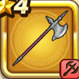

たつじんのオノ
攻略班 5.0点 / たいぼく斬かぶとわりまじん斬り
くわしい特徴
【レベル別習得スキル】 Lv1たいぼく斬（消費MP：5）植物系に威力160%それ以外の系統には130%の斬撃ダメージを与える Lv8かぶとわり（消費MP：8）敵1体に威力150%の斬撃ダメージを与え、たまに守備力を1段階下げる Lv20まじん斬り（消費MP：7）敵1体に30%の確率で斬撃ダメージの会心の一撃を与える。こころや心珠で会心率を上げても影響を受けない。 Lv28メタルドラゴンへのダメージ+5％ Lv36マシン系へのダメージ+5％ Lv40攻撃力+5 【限界突破スキル】 1凸スキルの斬撃・体技ダメージ+3% 2凸スキルの斬撃・体技ダメージ+3% 3凸スキルの斬撃・体技ダメージ+3% 4凸スキルの斬撃・体技ダメージ+3%